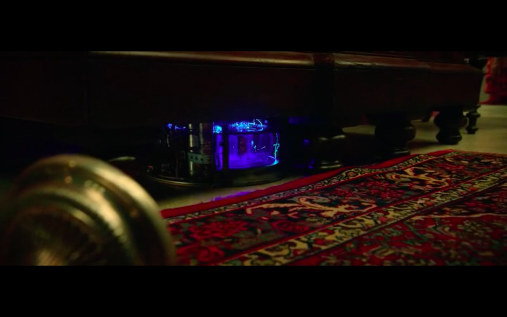
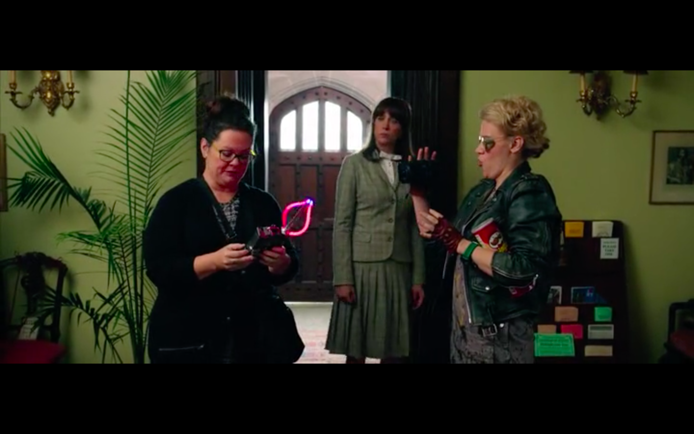
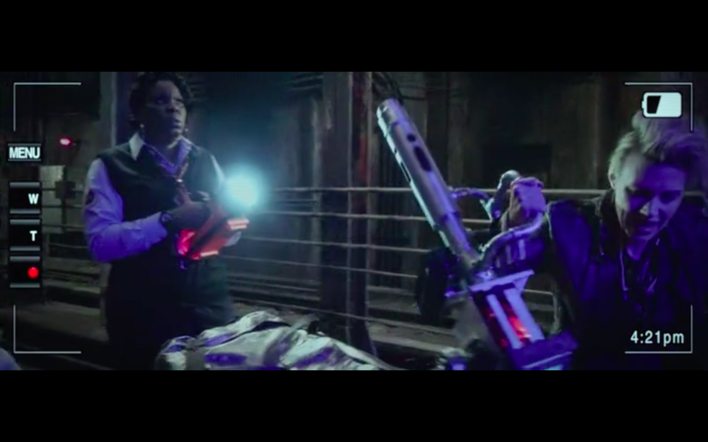
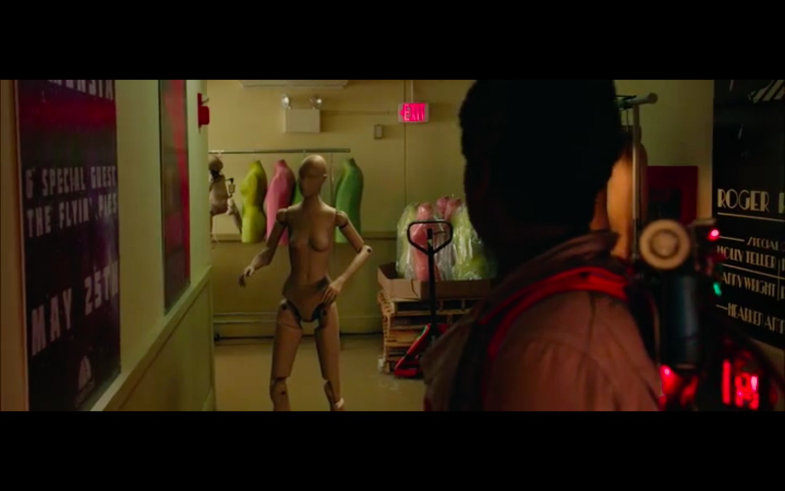
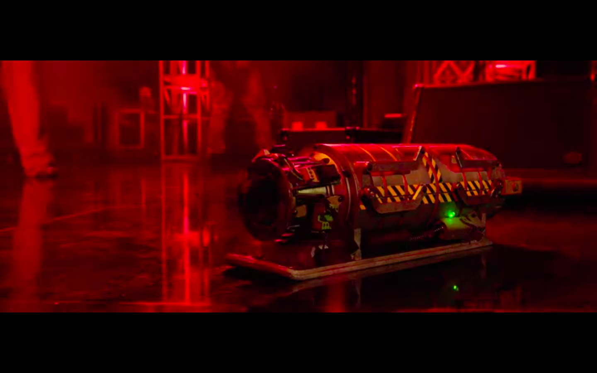
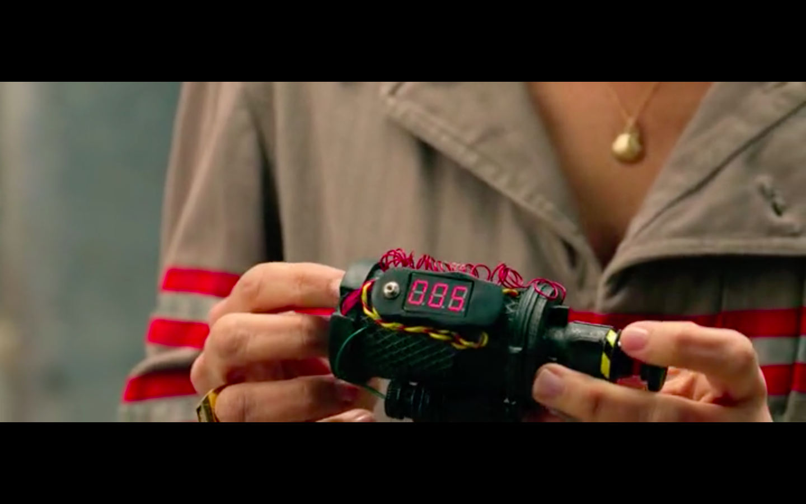
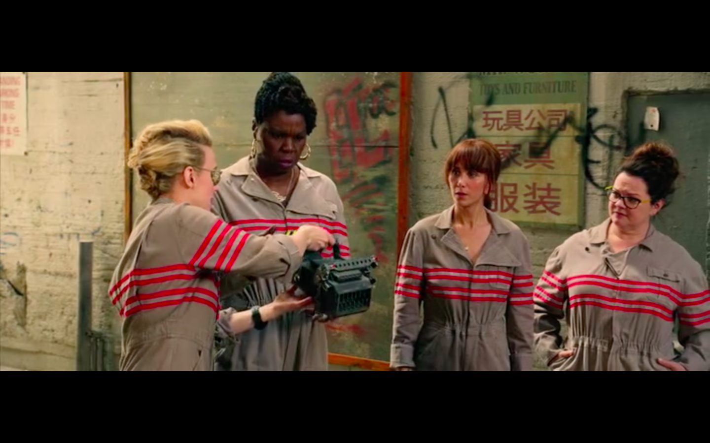
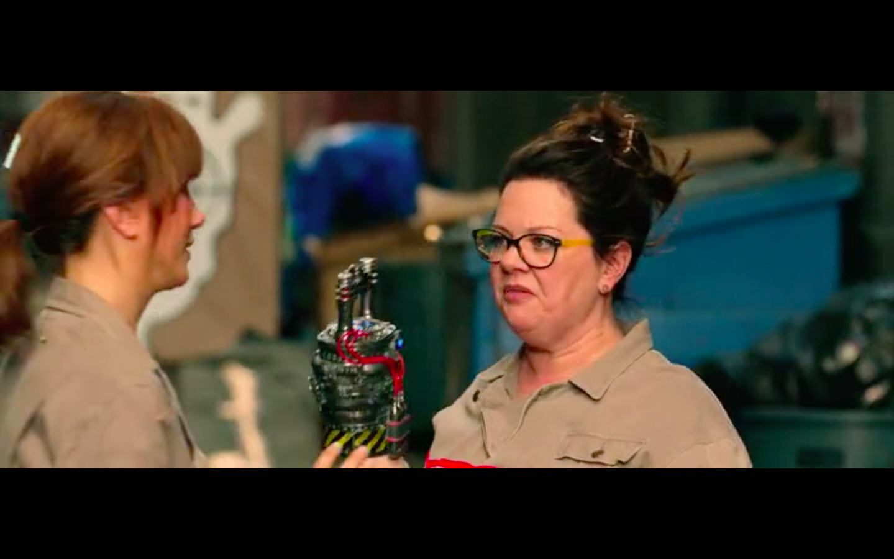

Sinopsis
Después de casi treinta años sin saber de ellos, los fantasmas y demonios se han vuelto a escapar de los infiernos para destruir la ciudad de Nueva York. Un nuevo equipo de los Cazafantasmas, formado por un grupo de cuatro mujeres, está dispuesto a terminar con cualquier amenaza espectral. Aparecen algunos espectros causando pánico y terror en toda Manhattan, así que Erin Gilbert y Abby Yates no se lo piensan dos veces, y organizan un nuevo grupo de Cazafantasmas para salvar el mundo.
Necesidades
La película está basada de principio a fin en la existencia de fantasmas y espectros malignos, por lo que el grupo de las 4 chicas cazafantasmas debe crear una serie de máquinas y aparatos para intentar combatirlos y atraparlos. Todos estos aparatos que crea la ingeniera son inventados, por lo que se trataría de interfaces imaginadas, que en la ficción son de gran utilidad para poder salvar la ciudad de Nueva York.
Dispositivo (Interfaz/tecnología):
Gadget 1
Primera Aparición:
0:03:30
Necesidad:
En este momento se utiliza un aparato tecnológico creado por el villano de la película, que es capaz de guardar y expulsar los fantasmas. La necesidad que suple esto es la del villano de expandir los fantasmas por la ciudad de Nueva York.
Dispositivo (Interfaz/tecnología):
Gadget 2
Enlace al clip
Primera Aparición:
0:17:58
Necesidad:
Una necesidad básica en esta película es la de localizar donde se encuentran los espectros malígnos, por lo que las cazafantasmas hacen uso de un aparato que es capaz de lograrlo. Este aparato funcionaría de forma parecida a como funcionan los geolocalizadores o las máquinas para detectar metales o minas.
Dispositivo (Interfaz/tecnología):
Gadget 3
Enlace al clip
Primera Aparición:
0:41:02
Necesidad:
Las cazafantasmas quieren atrapar los fantasmas para así poder experimentar con ellos, por lo que necesitan algún aparato para atraparlos. En la imagen se ve una máquina parecida a una pistola que lanza un rayo capaz de retener un fantasma.
Dispositivo (Interfaz/tecnología):
Gadget 4
Enlace al clip
Primera Aparición:
0:59:23
Necesidad:
El maniquí que se observa en la imagen es capaz de moverse solo gracias a que se introduce en él un espectro maligno. Esto se podría asemejar a un robot que realiza movimientos de manera autónoma al estar programado. [1]
Dispositivo (Interfaz/tecnología):
Gadget 5
Enlace al clip
Primera Aparición:
1:03:11
Necesidad:
Las cazafantasmas tienen la necesidad de capturar fantasmas, y por lo tanto deben de tener algún objeto donde guardarlos. El aparato de la imagen es lo que utilizan para ello.
Dispositivo (Interfaz/tecnología):
Gadget 6
Primera Aparición:
1:15:35
Necesidad:
Una de las necesidades con las que se encuentran las personajes de la película es la de combatir contra los fantasmas y para ello crean esta especie de bomba que solo afectará a los espectros.
Dispositivo (Interfaz/tecnología):
Gadget 7
Enlace al clip
Primera Aparición:
1:15:53
Necesidad:
Otro arma que crea la ingeniera de las cazafantasmas es el aparato de la imagen que es capaz de aspirer los fantasmas y triturarlos. Es un buen objeto para poder acabar con ellos, que es lo que quieren conseguir.
Dispositivo (Interfaz/tecnología):
Gadget 8
Enlace al clip
Primera Aparición:
1:16:46
Necesidad:
Para suplir la necesidad de luchar contra los fantasmas y acabar con ellos fabrican este guante que utilizará una de ellas, y que con el gesto de mover el puño hacia delante lanza un rayo para acabar con los fantasmas. [2] [3]
Tecnologías involucradas
Los dispositivos utilizados en la película no existen en la realidad ya que no existen los fantasmas, pero a pesar de ser una película de ciencia ficción donde todo parece imaginario hay cierta relación entre algunos de los aparatos que se muestran y algunos que existen.
-
Tecnologías disponibles en el momento de la producción
Como he dicho antes, ninguna de las tecnologías que se muestran estaban disponibles en la fecha de la producción, ya que en la vida real no se necesitan, pero hay cierto parecido en algunos objetos, como por ejemplo entre el aparato mostrado en el gadget 6 y una granada militar. También hay correspondencia entre el gadget 7 y una trituradora, o el gadget 8 y un guante biónico[2][3].
-
Tecnologías imaginadas en el momento de la producción
Sin embargo, las tecnologías que crean las cazafantasmas son imaginarias en mayor o menor medida, como por ejemplo el objeto del primer gadget, que permite almacenar un fantasma hasta que el villano lo desea y entonces expulsarlo al exterior.
También son interfaces imaginadas los elementos de los gadget 2 y 3, que sirven para detectar fantasmas y lanzar un rayo que los atrapa, respectivamente.
Impacto
La película no ha tenido ningún impacto en la tecnología actual, ya que las interfaces creadas no son útiles en la realidad, ya que las personas no tenemos las necesidades que se muestran en las películas.
De todos modos, la película es muy reciente y puede que la tecnología del futuro esté basada en alguno de los objetos mostrados.
Referencias
- Xataka, Robots autómatas, https://www.xataka.com/robotica-e-ia/robots-que-corren-y-saltan-ahora-los-vemos-empujar-como-humanos
- Xataka, Guante biónico, https://www.xataka.com/robotica-e-ia/como-es-un-guante-espacial-robotico-y-para-que-puede-servir-en-tierra-firme
- Soy motero, Guante biónico https://www.soymotero.net/roboglove-el-guante-bionico-que-ayuda-a-hacer-la-vida-mas-facil-19886